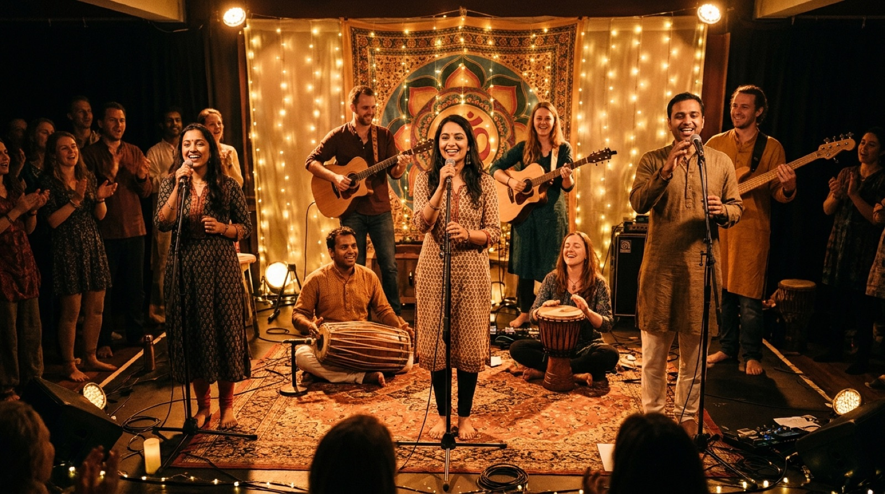
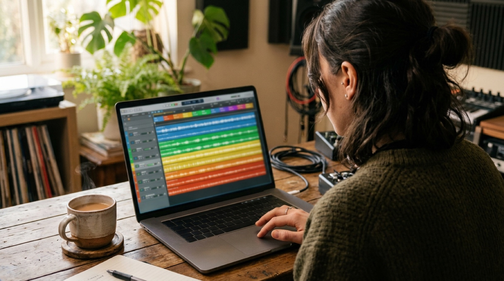
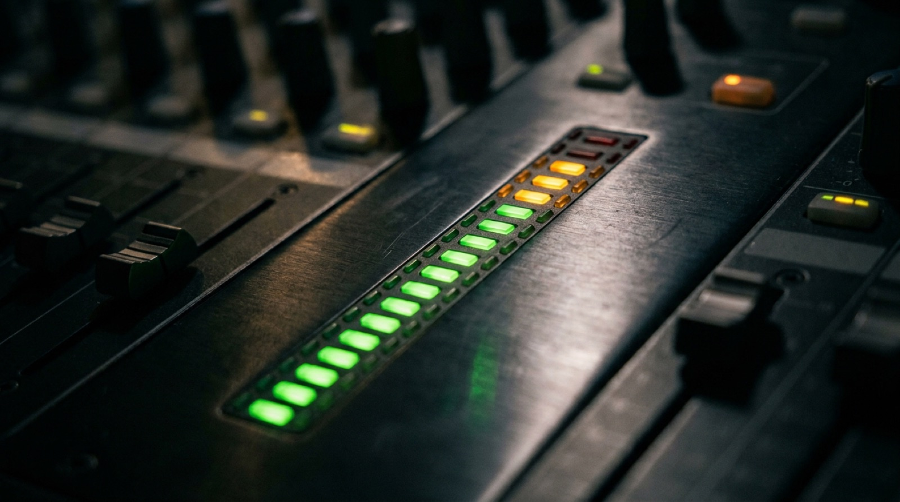
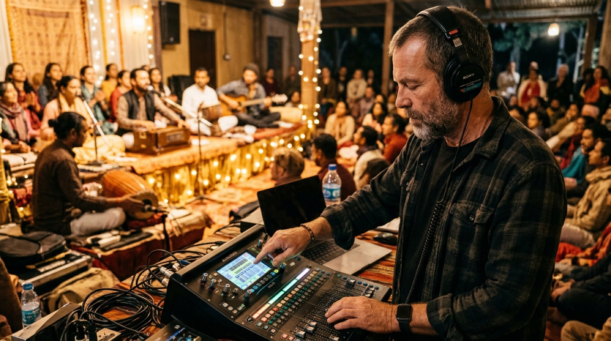
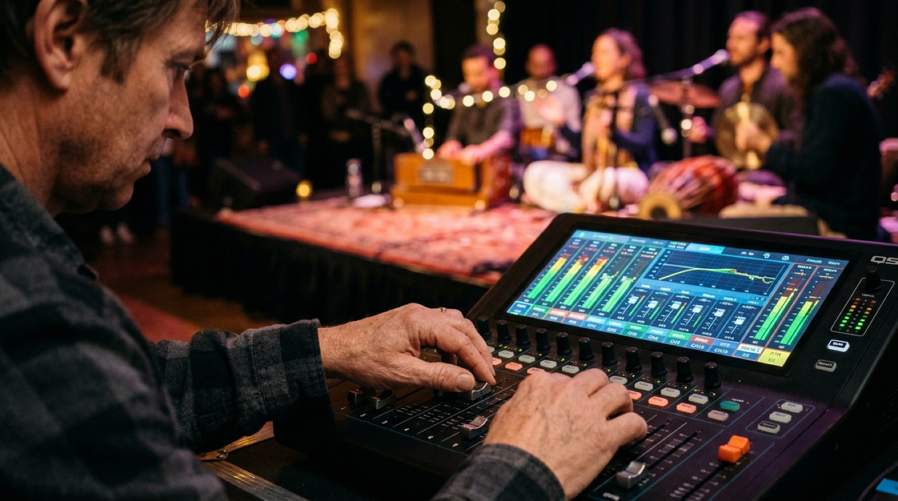
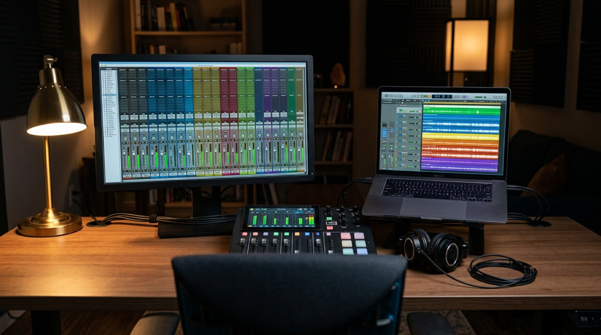
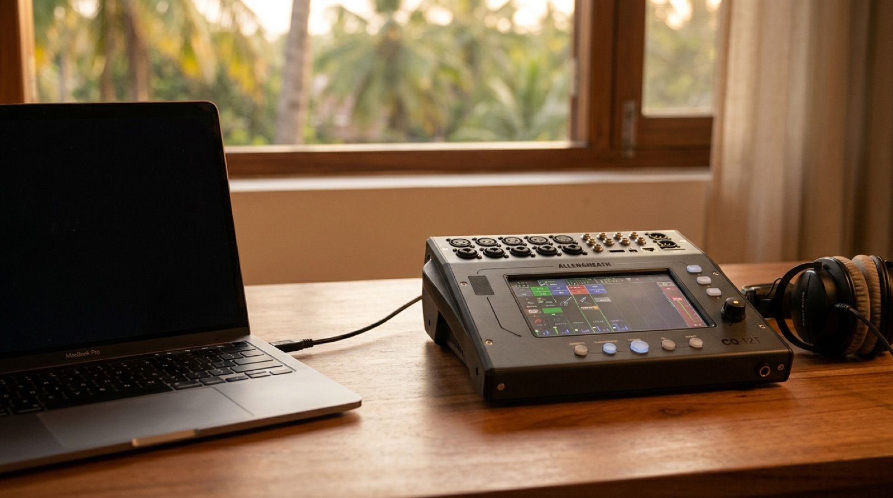

One evening of kirtan, eight songs, ten recorded channels. How the multitrack was prepared, played back into a small digital mixer as if the band were on stage again, and mixed by hand on its faders.
Prepared 23 and 24 October 2026. The levelling on the faders is Marko's, and it is his ears that finish the mix.

On 17 October 2026 the Santoshi band played a kirtan evening for Navratri. The venue's Behringer XR18 mixed the sound for the room and, at the same time, sent each input to Ableton Live on a Windows PC, which recorded them as separate files: 24-bit, 48 kHz, about 11 GB.
The evening was recorded in two halves. In the middle of the concert Igor's guitar broke. Its pickup (Igor DI) goes silent, and the new guitar was caught on a microphone (Igor MIC) for the second half. That is why there are ten mono channels. The venue's own stereo mix was recorded too, as an eleventh track, and is kept as a backup and a reference.
Three inputs of the XR18 were not recorded: krist VOC, snoopy MIC and petra.
Each one has a locator in Live, so one click jumps to its start.
| # | Starts at | Song |
|---|---|---|
| 1 | 7:54 | Jai Ganesha Pahi Mam |
| 2 | 16:52 | Ambe Jagadambe |
| 3 | 26:45 | Kali Kali Maha Maya (Sarva Mangala, He Mata Kali, Jaya Jagadambe) |
| 4 | 49:04 | Sarasvati Maha Lakšmi (a soft voice intro until 50:54) |
| 5 | 62:40 | Kailasha Vasa Maha deva |
| 6 | 72:00 | Uma Parvati Ananda Ma |
| 7 | 88:16 | Rama Rama Jaya Raja Ram |
| 8 | 104:09 | Asatoma Sadgamaya (after the words "for the end we always play one beautiful mantra") |
The Live set came from Windows, with every file offline and every track called "1-Audio", "2-Audio" and so on. Four things were done to it on the Mac.
Every file reference in the set pointed at D:/Documents/…. The paths were rewritten inside the saved set, and the recordings were hard-linked into the project's Samples folder, so nothing was copied and no extra 11 GB were used.
A photo of the venue's X AIR Edit screen gave the label of every input. Each track was named after the input it actually recorded, not after its position: the first attempt was one channel off, so the recorded input number now comes first, then the label for that number.
Three labels said little ("mic_3", "mic_4", "harm"). A sound analysis (how percussive, how much energy under 250 Hz, what pitch) showed a hand drum and a high and a low percussion. Marko then named them: the mridangam's two heads and the djembe.
The venue mix was measured for its quiet gaps (−45 dB and under, smoothed over 20 seconds), each start walked back so a soft intro stays with its song. Then speech recognition (Whisper) listened to the first words after each gap to confirm which song begins there. The eight locators were written into the set at those times.
Almost every recording already touched 0 dBFS, and the two mridangam microphones clipped at the concert itself; that distortion is in the files. Peak normalizing does nothing to files that already reach the top, and making them all equally loud would push the short, spiky drums over the ceiling again.
So each clip was cut into 100 ms windows and the level that 99 % of their peaks stay under was found: its typical peak. Each clip's gain sets that typical peak to −12 dBFS (the gains came out between −4.6 and −12.0 dB), and every Live track fader stays at 0 dB. Every channel now reaches the mixer at the same working level, with 12 dB of headroom above it.
"This normalization of the sound should be before every mix. When I bring in a mix, you need to put all the channels to −12 dB."Marko, 24.10.2026. Now the first step with any new multitrack.


One USB cable joins the Mac and Marko's Allen & Heath CQ-12T, and it carries sixteen channels each way. Live sends every recorded track to its own output, and each CQ input listens to the USB channel of its number instead of its socket. On the desk, the ten musicians arrive on ten faders, exactly as if they were on stage.
Live track, the XR18 input it was recorded from, its name on the CQ (six characters at most) and the Quick preset chosen for it. The last row is the venue's own mix, for listening only.
| Live · Ext. Out | Track | XR18 input | What it is | CQ | Quick preset |
|---|---|---|---|---|---|
| 1 | svemir VOC | 1 | male voice | SvmVOC | Vocal · Lo Pitch · Comp |
| 2 | bas | 2 | bass | bas | Bass · Clean · Comp |
| 3 | Mridangam | 3 (mic_3) | mridangam, the high head | Mrdngm | Drums/Perc · Acoustic Perc. · Full · Comp |
| 4 | Mridangam Low | 4 (mic_4) | mridangam, the low head | MrdLow | Drums/Perc · Tom · 16" · Comp |
| 5 | Djembe | 5 (harm) | djembe | Djembe | Drums/Perc · Acoustic Perc. · Warm · Comp |
| 6 | Igor VOC | 7 | male voice | IgVOC | Vocal · Lo Pitch · Comp |
| 7 | Igor DI | 8 | Igor's guitar pickup, first half | IgDI | Guitar · Acoustic · Comp |
| 8 | tajana | 10 | female lead voice | tajana | Vocal · Hi Pitch · Comp |
| 9 | snoopy DI | 11 | Snoopy's guitar pickup | SnpDI | Guitar · Acoustic · Comp |
| 10 | Igor MIC | 9 | the new guitar on a microphone, second half | IgMIC | Guitar · Acoustic · Comp |
| 11 / 12 | Venue Mix (stereo) | 17 / 18 | the venue's stereo mix, the house mix, reference only | House (ST IN, source SD/USB) | fader Off, Listen only |
The CQ was set from CQ MixPad on the Mac. The tone of each channel is a starting point chosen by its sound; the balance between them is left to the faders.
Every input on source SD/USB, named after its Live track, with the CQ's Quick preset that fits it: low-pitch vocal for Svemir and Igor, high-pitch vocal for Tajana, clean bass, acoustic guitar for the two pickups and the guitar microphone, and percussion presets for the mridangam and the djembe. Each preset carries its own compressor.
The easyVERB, type Vocal Classic, shared. Only the three voices send to it, SvmVOC, IgVOC and tajana, each at −13.3 dB. The drums and the bass send nothing: reverb on them would blur the rhythm. All voices share one room, and the reverb has one fader of its own.
The CQ has one plain compressor type, no special "glue" model, so it is set gently enough to act as one: it only works in the loud parts, and the whole band breathes together.
Drawn from the values on the CQ. Above the threshold, 1.9 dB in gives 1 dB out; a full-scale peak comes out about 7 dB lower.
The attack of 24.5 ms is slow enough to let the first hit of the mridangam through, so the drums stay alive; the release of 184 ms lets go in time with the music.
The user guide does not say plainly where the computer's channels 11 to 16 arrive. Allen & Heath's support article "CQ. USB-B Routing" does: from the computer to the CQ-12T the sixteen channels are fixed, and only the way back to the computer can be chosen. Then each pair was tried from Live, watching the meters in CQ MixPad.
11 to 16 are chosen on the CQ (CONFIG › USB/SD › Channel Assignment). This is what the computer can record.
Fixed by Allen & Heath; measured on Marko's CQ on 24.10.2026. 11/12 plays on ST IN only once its Input Source is SD/USB instead of Analogue. 15/16 should play on BT, but no meter moved there: still an open question.
One honest note: "17/18", which first looked like a mystery on the CQ, is not the CQ at all. It is the XR18 input pair the venue mix was recorded from, still shown as the Venue Mix track's input in Live.
Marko mixes in real time and records the CQ's Main LR to its SD card (HOME › RECORD). At the same time he can hear the mix the venue made that night, and go back and forth during a whole song.

A scene on the CQ holds the names, the preamps, the processing, the sends and the effects. Scene 1, "Santoshi Mix", was stored before the levelling and overwritten on 23.10.2026 with the named percussion and its new presets.
After Marko's levelling: HOME › SCENES › Santoshi Mix › Overwrite. A whole Show (every scene and library) can go to a USB stick from HOME › DATA › Shows › Store New.
And if anything is ever lost, the Live set or the CQ's memory, every step and every value is written down in the project's repository, so the whole setup can be repeated from nothing.

Everything on this page is also taught by a small Mac app: eleven lessons, spoken aloud, with diagrams that light up as the voice speaks and a hand that points to the real controls in CQ MixPad and Ableton Live.
It is a Swift app that works offline: the voice is made beforehand, sentence by sentence, never streamed. Its clicks only change pages and banks; nothing in the mix is changed by it. The examples are the Santoshi settings above.

The CQ-12T is 370 × 305 × 190 mm and weighs 3.2 kg. It has no stand thread and no VESA plate. What it has are free M4 holes on its sides, near the rubber feet, made for Allen & Heath's own rack ears. So there are two ways to lift it: rack ears and a small rack stand, or simply a laptop shelf that is big and strong enough.
Allen & Heath's rack ear kit screws into the unused M4 holes on the CQ's sides with four M4 × 8 mm screws (fitting note AP12813), and turns the desk into a 19" unit six rack units high. These are probably the "four free screws" on the back. The kit is not sold on Amazon.de: ask an Allen & Heath dealer (in the UK it is about £55).
The other stands below hold the CQ on a laptop shelf. None of their makers names the CQ-12T: they fit by size and load, each rated 10 kg or more, three times the CQ's weight. Use the shelf's pins or front lip, so the desk cannot slide when it is tilted. And measure the screw holes first before you screw anything into the CQ: the rack-ear holes take M4, and nothing else is documented.
A steel tabletop 19-inch frame, six units high, tilting from 65° to 90°: the CQ in its rack ears stands on the table like a small console. Check the seller: the cheapest offer comes from a marketplace seller.
On Amazon.de →A floor tripod, 85 to 125 cm high, with a non-slip shelf of 50.8 × 40.6 cm and a load of 18 kg: the CQ's 37 × 30.5 cm sits on it with room to spare.
On Amazon.de →A tripod laptop stand with a tilting shelf of 480 × 330 mm and adjustable holding pins that stop the desk sliding forward. Rated 15 kg on the Adam Hall data sheet.
On Amazon.de →A steel tripod, 70 to 125 cm, with a removable shelf of 480 × 310 mm, rubber-capped clamping bolts and a guaranteed load of 10 kg. The best-sized shelf for the CQ's 305 mm depth.
On Amazon.de →A folding table stand for laptops and mixers, at 22, 26.5 or 31.5 cm, rated 10 kg: it lifts the back of the CQ toward the operator. Its arm spread is not published: measure it against the 370 mm width.
On Amazon.de →Prices on Amazon.de, October 2026. Check the price on more than one site before you buy.
The clip gains (typical peak of each file), the song starts (silences in the venue mix, confirmed by the words), the USB return channels (by the meters, against Allen & Heath's fixed routing), the percussive share and pitch of each channel. The mridangam clipping is counted in the files: over a thousand 100 ms windows.
The Quick presets, the reverb type and its −13.3 dB sends, the Main LR compressor's values. They are a starting point by ear and by experience. Values set by dragging in MixPad land near, not exactly, and were checked on screen.
The faders, the balance, and the final recording to the SD card. The levelling is his, and so is the last word on every sound in this mix.
